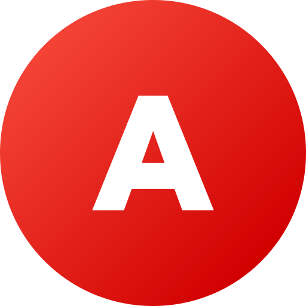

18:00
22 Ağustos Cumartesi
İyi Akşamlar
İpucu: Panodaki herhangi bir resmi Ctrl + V ile yapıştırarak görsel arama yapabilirsiniz.

ATABVarsayılan motorunuzu seçin veya istediğiniz özel arama motorlarını ekleyin.
ATAB tüm kartlarınızı, yer imlerinizi ve notlarınızı tarayıcınızın güvenli kalıcı hafızasında saklar. Başka bir bilgisayara geçmek veya manuel yedek almak için aşağıdaki seçenekleri kullanabilirsiniz.
ATAB Yeni Sekme eklentisi en son sürümleri GitHub Releases üzerinden takip eder ve tek tıkla güncellemenizi sağlar.
... sitesini hangi karta eklemek istersiniz?
Yapıştırdığınız görsel ile hangi arama motorunda arama yapmak istersiniz?